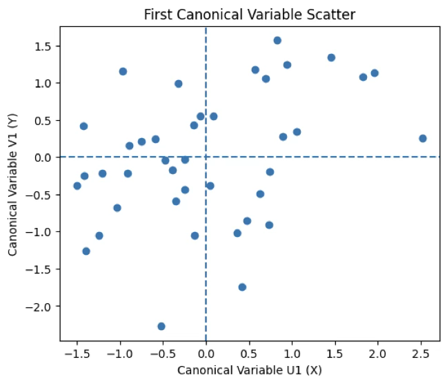

다변량분석 7. 정준상관분석 | 다변량분산분석
Chapter 1. 정준상관분석
1. 정준상관분석이란?
필요 이유
다변량분석에서는 하나의 변수만으로 현상을 설명하기 어려운 경우가 많다. 사회과학, 경영학, 심리학, 보건학 등 다양한 분야에서 연구자는 여러 개의 설명변수와 여러 개의 반응변수를 동시에 관측하게 된다. 이러한 상황에서 분석의 핵심 질문은 개별 변수 간의 단순한 관계를 넘어, 변수 집합과 변수 집합 사이에 어떤 구조적 연관성이 존재하는가로 확장된다.
전통적인 회귀분석은 하나의 종속변수를 기준으로 설명변수의 영향을 추정하는 데 초점을 둔다. 이 접근법은 예측이나 인과 해석에는 유용하지만, 종속변수가 여러 개인 경우 각각의 회귀모형을 따로 적합해야 하며, 그 과정에서 종속변수들 간의 상관 구조는 충분히 반영되지 않는다. 반면 주성분분석이나 요인분석은 여러 변수의 정보를 요약하는 데 효과적이지만, 하나의 변수 집합 내부의 구조만을 다룰 뿐 서로 다른 두 변수 집합 간의 관계를 직접적으로 설명하지는 못한다.
정준상관분석(canonical correlation analysis)은 이러한 분석상의 공백을 메우기 위해 제안된 다변량 기법이다. 이 방법은 두 개의 변수 집합이 주어졌을 때, 각각의 집합에서 선형 결합을 구성하여 그 결합들 사이의 상관을 최대화하는 방향을 찾는다. 즉, 개별 변수 간의 관계가 아니라 두 변수 집합 전체를 대표하는 요약 변수들 간의 관계를 분석의 대상으로 삼는다. 이를 통해 연구자는 한 변수 집합이 다른 변수 집합과 어떤 방식으로 연결되어 있는지를 보다 구조적인 관점에서 이해할 수 있다.
정준상관분석 특성
정준상관분석의 중요한 특징은 분석의 초점이 예측이나 검정에만 있지 않다는 점이다. 이 방법은 두 변수 집합 간의 대응 구조를 탐색하는 데 목적이 있으며, 여러 개의 정준변수를 순차적으로 도출함으로써 복수의 관계 축을 제시한다. 각 정준변수 쌍은 이전 쌍과 직교하도록 구성되므로, 서로 중복되지 않는 독립적인 관계 구조를 단계적으로 해석할 수 있다. 이러한 특성은 복잡한 다차원 관계를 체계적으로 분해하여 이해하는 데 큰 장점을 제공한다.
정준상관분석은 또한 다변량 분산분석이나 판별분석과 같은 다른 다변량 기법을 이론적으로 연결해 주는 역할을 한다. 예를 들어, 집단 정보를 더미 변수로 구성하여 설명변수 집합으로 두는 경우, 다변량 분산분석은 정준상관분석의 특수한 형태로 해석될 수 있다. 이러한 관점은 다변량분석을 개별 기법의 나열이 아니라, 공통된 수리적 틀 위에서 이해되는 하나의 체계로 인식하게 한다는 점에서 교육적으로 중요한 의미를 갖는다.
그럼에도 불구하고 정준상관분석은 실무 연구에서 자주 사용되는 기법은 아니다. 해석이 직관적이지 않고, 표본 크기와 가정에 대한 요구가 상대적으로 크기 때문이다.
2. 개념 및 기본설정
정준상관분석은 여러 변수로 이루어진 두 변수 군(집합) 간의 선형 상관 관계를 분석하는 다변량 통계 방법이다. 이 방법의 목적은 개별 변수 간의 관계를 각각 살펴보는 것이 아니라, 두 변수 집합을 대표하는 선형 결합을 구성하여 그 결합들 사이의 상관을 최대화하는 데 있다.
예를 들어, 신체적 조건을 나타내는 변수군(키, 몸무게, 가슴둘레 등)과 운동 능력을 나타내는 변수군(달리기 기록, 윗몸일으키기 횟수, 턱걸이 횟수 등)이 주어졌다고 하자. 이 경우 연구의 관심은 특정 신체 조건 하나가 특정 운동 능력 하나와 얼마나 관련되는가가 아니라, 신체적 조건 전반과 운동 능력 전반 사이에 체계적인 선형 관계가 존재하는가에 있다. 정준상관분석은 이러한 질문에 답하기 위한 분석 방법이다.
변수 군 간 선형 결합과 정준변수
정준상관분석에서는 다음과 같이 두 개의 변수 집합을 고려한다.
\[(X_{1},X_{2},\ldots,X_{m}),(Y_{1},Y_{2},\ldots,Y_{n})\]
분석의 핵심은 각 변수 집합에 대해 선형 결합을 구성하고, 이 두 선형 결합 간의 상관계수를 최대화하는 것이다. 즉,
\(U = a_{1}X_{1} + a_{2}X_{2} + \cdots + a_{m}X_{m}\),
\(V = b_{1}Y_{1} + b_{2}Y_{2} + \cdots + b_{n}Y_{n}\)와 같은 두 개의 선형 결합을 정의하고, \(\text{Corr}(U,V)\)가 최대가 되도록 계수 \(a_{1},\ldots,a_{m},b_{1},\ldots,b_{n}\)을 결정한다. 여기서 U와 V를 각각 정준변수(canonical variate) 라고 한다.
이 과정은 단일한 상관계수를 계산하는 데서 끝나지 않으며, 첫 번째 정준변수 쌍과 직교하면서 그다음으로 큰 상관을 갖는 두 번째 정준변수 쌍을 순차적으로 구할 수 있다. 이를 통해 두 변수 집합 간의 다차원적 관계 구조를 단계적으로 파악할 수 있다.
확률적 설정과 공분산 구조
전체 변수를 하나의 벡터로 묶어 \(\mathbf{x} = (x_{1},x_{2},\ldots,x_{p})^{\top}\)라 하고, 이를 두 개의 부분 벡터로 나눈다고 하자. \(\mathbf{x} = \left( \begin{array}{r} \mathbf{x}_{1} \\ \mathbf{x}_{2} \end{array} \right)\). 정준상관분석에서는 일반적으로 이 벡터가 다변량 정규분포를 따른다고 가정한다.
\(\mathbf{x} \sim \mathcal{N}\left( \left( \begin{array}{r} \mathbf{\mu}_{1} \\ \mathbf{\mu}_{2} \end{array} \right),\begin{pmatrix} \Sigma_{11} & \Sigma_{12} \\ \Sigma_{21} & \Sigma_{22} \end{pmatrix} \right)\) 여기서 \(\Sigma_{12}\)와 \(\Sigma_{21}\)은 두 변수 집합 간의 공분산 구조를 나타내며, 정준상관분석은 이 공분산 구조를 바탕으로 두 집합의 선형적 연관성을 최대화하는 방향을 찾는다.
정준상관분석의 특수한 경우
정준상관분석은 여러 익숙한 통계 분석 방법을 포괄하는 일반적인 틀로 이해할 수 있다.
첫째, 각 변수 군이 모두 하나의 변수로만 구성되어 있다면, 정준상관분석은 두 변수 간의 단순 상관계수로 귀결된다.
둘째, 한쪽 변수 군이 하나의 변수로만 구성되어 있고, 다른 한쪽이 여러 변수로 이루어진 경우에는 다중회귀분석과 밀접한 관련을 갖는다. 이때 정준상관계수는 다중회귀모형에서의 결정계수 \(R^{2} = \frac{\text{SSR}}{\text{SST}}\)의 제곱근 \(\sqrt{R^{2}}\)에 해당한다. 즉, 종속변수와 설명변수들의 선형 결합 사이의 최대 상관을 의미한다.
이와 같이 정준상관분석은 단순 상관분석과 다중회귀분석을 포함하는 보다 일반적인 분석 방법이며, 다변량 자료에서 변수 집합 간 관계를 체계적으로 이해하기 위한 이론적 기반을 제공한다.
3. 정준변수 구하기
정준상관분석의 핵심은 두 변수 군을 각각 하나의 대표 변수로 요약하고, 이 두 요약 변수 간의 상관을 최대화하는 데 있다. 이를 위해 각 변수 군에 대한 선형 결합을 정의하고, 그 선형 결합 간 상관계수가 최대가 되도록 하는 계수를 구한다. 이때 얻어지는 선형 결합을 정준변수(canonical variate) 라 한다.
제1 정준변수
두 변수 군의 선형 결합 간 상관계수를 가장 크게 하는 경우를 먼저 고려하자. 두 변수 군을 각각 \(\mathbf{x}_{1},\mathbf{x}_{2}\)라 하면, 다음과 같은 선형 결합을 정의할 수 있다. \(V_{1} = \mathbf{a}_{1}^{\top}\mathbf{x}_{1},W_{1} = \mathbf{b}_{1}^{\top}\mathbf{x}_{2}\)
정준상관분석에서는 다음의 최적화 문제를 고려한다.
\(\rho_{1} = \max_{\mathbf{a}_{1} \neq 0,\mathbf{b}_{1} \neq 0}\text{corr}(V_{1},W_{1})\) 이 조건을 만족하는 \(\mathbf{a}_{1},\mathbf{b}_{1}\)에 의해 정의되는 \(V_{1},W_{1}\)을 제1정준변수라 하고, 이때의 상관계수 \(\rho_{1}\)을 제1정준상관계수라 한다. 정준변수는 크기의 임의성이 존재하므로, 해의 유일성을 확보하기 위해 다음과 같은 정규화 조건을 부여한다.
\[\text{Var}(V_{1}) = \text{Var}(W_{1}) = 1\]
이는 공분산 행렬을 이용하여 다음과 같이 표현된다.
\[\mathbf{a}_{1}^{\top}\Sigma_{11}\mathbf{a}_{1} = 1,\mathbf{b}_{1}^{\top}\Sigma_{22}\mathbf{b}_{1} = 1\]
제2 정준변수
제1정준변수가 두 변수 군 간의 가장 강한 선형 관계를 설명한다면, 그다음 단계에서는 이미 설명된 관계와 독립적인 추가 관계를 탐색한다. 이를 위해 다음과 같은 선형 결합을 정의한다.
\(V_{2} = \mathbf{a}_{2}^{\top}\mathbf{x}_{1},W_{2} = \mathbf{b}_{2}^{\top}\mathbf{x}_{2}\). 제2정준변수는 다음의 조건을 만족하도록 정의된다.
\(V_{2}\)와 \(W_{2}\)는 각각 \(V_{1}\)과 \(W_{1}\)에 대해 직교(독립)한다.
\[\text{Var}(V_{2}) = \text{Var}(W_{2}) = 1\]
이 조건하에서 \(\rho_{2} = \text{corr}(V_{2},W_{2})\)를 제2정준상관계수라 한다.
이와 같은 방식으로 이후의 정준변수들도 순차적으로 정의할 수 있으나, 실제 분석에서는 해석의 어려움으로 인해 보통 2–3개의 정준변수까지만 해석하는 경우가 많다.
정준상관계수의 개수
정준상관계수의 개수는 두 변수 군의 차원에 의해 결정된다. 한 변수 군의 변수 수가 p, 다른 변수 군의 변수 수가 q일 때, 정의될 수 있는 정준상관계수의 최대 개수는 \(\min(p,q)\)이다. 이는 두 변수 군 중 차원이 더 작은 변수 군의 정보만큼만 독립적인 관계 축을 구성할 수 있기 때문이다. 일반적으로 각각 2개 정준변수를 사용한다.
정준상관계수의 유의성 검정
정준상관계수의 통계적 유의성은 두 변수 군 간에 선형 관계가 존재하는지를 검정하는 문제로 귀결된다. 먼저 제1정준상관계수에 대해 다음의 가설을 고려한다.
\(H_{01}:\rho_{1} = 0\text{vs.}H_{01}:\rho_{1} \neq 0\) 이는 공분산 행렬의 관점에서 다음의 가설과 동치이다.
\[H_{01}:\Sigma_{12} = 0\text{vs.}H_{01}:\Sigma_{12} \neq 0\]
이때 사용되는 검정 통계량은 Wilks의 람다(Wilks’ Lambda)로,
\(T = \frac{|\widehat{\Sigma}|}{|{\widehat{\Sigma}}_{11}||{\widehat{\Sigma}}_{22}|} = \overset{k}{\prod_{i = 1}}(1 - {\widehat{\rho}}_{i}^{2}),k = \min(p,q)\)로 정의된다.
보다 일반적으로 r번째 이후의 정준상관계수에 대한 검정은
\(H_{0r}:\rho_{r} = 0\text{vs.}H_{0r}:\rho_{r} \neq 0\) 의 형태로 설정되며, 이에 대한 검정 통계량은 \(T_{r} = \overset{k}{\prod_{i = r}}(1 - {\widehat{\rho}}_{i}^{2})\)이다. 이 통계량은 적절한 변환을 거쳐 카이제곱 분포를 따르며, 이를 이용해 정준상관계수의 유의성을 판단한다.
4. 정준변수 특성
정준상관분석에서 정준변수는 두 변수군 각각에 대해 구성된 선형결합 변수로서, 서로 짝을 이루어 해석된다. 각 정준변수 쌍은 두 변수군 간의 관계를 가장 잘 요약하는 축을 의미하며, 이 축은 상관계수가 최대가 되도록 정의된다. 따라서 정준변수 간의 관계는 개별 관측변수 간의 단순한 상관관계가 아니라, 두 변수군 전체의 구조적 연관성을 요약한 결과로 이해할 수 있다.
정준변수의 관계는 순차적이고 계층적인 구조를 가진다. 제1정준변수 쌍은 두 변수군 사이의 가장 강한 선형적 연관성을 설명하며, 이후의 제2, 제3 정준변수 쌍은 앞선 정준변수 쌍과 서로 직교하도록 구성된다. 이 직교성은 각 정준변수 쌍이 이전 정준관계로 설명되지 않은 새로운 관계 구조를 독립적으로 포착함을 의미한다. 따라서 정준상관분석은 단일한 관계 요약에 그치지 않고, 두 변수군 간에 존재하는 다차원적 연관 구조를 단계적으로 분해하는 분석 방법이라 할 수 있다.
정준변수 간의 상관관계는 각 정준쌍 내부에서만 의미를 가지며, 서로 다른 차수의 정준변수 사이에는 상관이 존재하지 않는다. 이는 각 정준변수 쌍이 서로 중복되지 않는 정보만을 담고 있음을 보장한다. 이러한 성질로 인해 연구자는 정준상관계수의 크기와 통계적 유의성을 기준으로, 해석에 포함할 정준변수 쌍의 수를 합리적으로 결정할 수 있다.
해석 측면에서 정준변수 간의 관계는 두 변수군을 대표하는 잠재적 요약 축 간의 관계로 이해된다. 즉, 정준변수는 개별 변수의 효과를 직접적으로 설명하기보다는, 여러 변수가 결합된 종합적인 경향이나 패턴을 나타낸다. 따라서 정준변수 간의 높은 상관관계는 두 변수군이 공통적으로 공유하는 구조적 특성이 강하다는 것을 의미하며, 반대로 낮은 상관관계는 두 변수군 간의 연관성이 제한적이거나 특정 차원에만 국한되어 있음을 시사한다.
요약하면, 정준변수 간의 관계는 두 변수군 사이의 연관성을 가장 효과적으로 요약한 잠재 축 간의 관계이며, 이러한 관계는 순차적·직교적 구조를 통해 체계적으로 분해된다. 정준상관분석은 이와 같은 정준변수 관계를 바탕으로, 복수의 변수군이 어떻게 연결되어 있는지를 전체 구조 차원에서 이해하도록 돕는 분석 방법이다.
정준변수 적재량
정준상관분석에서 정준적재량(canonical loadings)은 각 관측변수가 동일한 변수군에서 도출된 정준변수와 어느 정도의 선형적 연관성을 가지는지를 나타내는 지표이다. 이는 관측변수와 정준변수 간의 상관계수로 정의되며, 정준변수가 어떤 변수들의 공통된 변동을 주로 반영하고 있는지를 파악하는 데 사용된다. 따라서 정준적재량은 정준변수의 해석을 가능하게 하는 핵심적인 도구로, 정준변수를 단순한 수학적 결합이 아닌 의미 있는 요약 축으로 이해하도록 돕는다.
정준적재량은 정준계수와 구별되어 해석되어야 한다. 정준계수가 정준변수를 구성하는 선형결합의 가중치를 의미한다면, 정준적재량은 그 결과로 형성된 정준변수와 원변수 간의 실제 연관 정도를 보여준다. 이로 인해 정준적재량은 변수의 단위나 다중공선성의 영향을 상대적으로 덜 받으며, 해석의 안정성이 높다. 실제 분석에서는 정준변수의 성격을 규정할 때 정준계수보다 정준적재량을 중심으로 해석하는 것이 일반적이다.
교차적재량(cross-loadings)은 한 변수군의 관측변수가 다른 변수군에서 도출된 정준변수와 가지는 상관관계를 의미한다. 이는 두 변수군 간의 관계가 정준변수 수준에서만 존재하는 것이 아니라, 개별 변수 차원에서 어떻게 연결되는지를 구체적으로 보여주는 지표이다. 교차적재량을 통해 연구자는 두 변수군 간의 연관 구조가 어떤 변수들을 매개로 형성되는지를 보다 직접적으로 파악할 수 있다.
교차적재량은 두 변수군 사이의 실질적인 연결 강도를 평가하는 데 활용된다. 정준상관계수가 두 정준변수 간의 전반적인 연관성을 요약한다면, 교차적재량은 그 연관성이 각 관측변수 수준에서 어떻게 분해되는지를 설명한다. 따라서 교차적재량은 정준상관분석 결과를 해석 가능한 형태로 구체화하며, 분석 결과를 실천적·정책적 논의로 확장하는 데 중요한 근거를 제공한다.
종합하면, 정준적재량은 각 정준변수가 무엇을 대표하는지를 설명하는 내부적 해석 지표이며, 교차적재량은 두 변수군이 어떻게 연결되는지를 변수 수준에서 드러내는 외부적 해석 지표라 할 수 있다. 정준상관분석의 해석에서는 정준상관계수만으로 결론을 도출하기보다는, 정준적재량과 교차적재량을 함께 고려함으로써 두 변수군 간 관계의 구조적 의미를 보다 명확하고 체계적으로 이해할 수 있다.
5. 정준변수 활용
정준변수는 두 변수군에 포함된 다수의 변수를 각각 하나의 요약된 축으로 축약함으로써, 변수 차원 축소의 역할을 수행한다. 원래 정준상관분석에서는 p개의 설명변수와 q개의 반응변수를 동시에 고려해야 하지만, 정준변수 쌍을 이용하면 이들 변수군 사이의 관계를 소수의 정준축으로 요약할 수 있다. 이러한 축은 단순한 분산 설명이 아니라, 두 변수군 간 상관구조가 가장 강하게 드러나는 방향으로 구성된다는 점에서 의미를 가진다. 즉, 정준변수는 ”두 변수군 사이의 핵심적인 연관 구조”를 저차원 공간에서 표현하는 도구로 이해할 수 있다. 이 점에서 단일 변수군 내부의 분산 구조를 요약하는 주성분분석(PCA)과 대비되며, 정준상관분석은 두 변수군 간의 공통된 구조를 요약하는 데 목적이 있다.
정준변수는 또한 두 변수군 간 관계를 해석하기 위한 핵심적인 분석 도구로 활용된다. 이를 통해 연구자는 두 변수군 사이에 통계적으로 의미 있는 연관성이 존재하는지, 그 연관성이 어떤 변수들의 결합을 통해 주로 형성되는지, 그리고 제1정준관계 이후에도 서로 독립적인 추가적 관계 구조가 존재하는지를 체계적으로 검토할 수 있다. 이러한 해석을 위해서는 정준상관계수의 크기를 통해 각 정준변수 쌍의 중요성을 평가하고, 정준적재량을 통해 각 관측변수가 해당 정준변수에 기여하는 정도를 파악하며, 교차적재량을 통해 한 변수군의 정준변수가 다른 변수군의 개별 변수들과 어떻게 연관되는지를 함께 살펴보는 것이 일반적이다.
더 나아가 정준변수는 해석 가능한 잠재지표로서의 역할도 수행한다. 정준변수는 개별 관측변수들의 단순한 집합이 아니라, 이들 변수를 선형 결합하여 구성한 잠재적인 종합 지표로 이해될 수 있다. 예를 들어, 학습투입을 나타내는 공부시간, 출석률, 과제수행도로 구성된 변수군과 학습성과를 나타내는 시험점수와 프로젝트 평가 점수로 구성된 변수군을 고려할 경우, 정준변수는 각각 ”학습투입의 종합적 수준”과 ”학습성과의 종합적 수준”을 대표하는 지표로 해석될 수 있다. 이와 같이 정준변수는 복수의 관측변수를 하나의 해석 가능한 축으로 통합함으로써, 다변량 자료의 구조적 관계를 직관적으로 이해할 수 있도록 돕는다.
6. 정준상관분석 사례
import numpy as np
import pandas as pd
from sklearn.preprocessing import StandardScaler
from sklearn.cross_decomposition import CCA
np.random.seed(123)
n = 40 # 표본 수
data = pd.DataFrame({
# X 변수군: 학습투입
"study_time": np.random.normal(10, 3, n),
"attendance": np.random.normal(90, 5, n),
"assignment": np.random.normal(80, 8, n),
"participation": np.random.normal(4, 0.6, n),
# Y 변수군: 학습성과
"exam": np.random.normal(82, 7, n),
"project": np.random.normal(85, 6, n),
"achievement": np.random.normal(84, 6, n)
})
print(data.head())study_time attendance assignment participation exam project achievement
0 6.743108 85.973167 90.041899 3.834528 82.142212 89.219861 85.745246
1 12.992036 81.361653 74.489048 3.668735 80.642253 81.411368 85.677976
(이하 생략)
#정준상관분석은 척도에 민감하므로 표준화가 필수이다.
X = data[["study_time", "attendance", "assignment", "participation"]]
Y = data[["exam", "project", "achievement"]]
scaler_X = StandardScaler()
scaler_Y = StandardScaler()
X_std = scaler_X.fit_transform(X)
Y_std = scaler_Y.fit_transform(Y)
#정준상관분석 적합
cca = CCA(n_components=2)
cca.fit(X_std, Y_std)
X_c, Y_c = cca.transform(X_std, Y_std)
#정준상관계수 계산
corrs = [np.corrcoef(X_c[:, i], Y_c[:, i])[0, 1]
for i in range(X_c.shape[1])]
for i, c in enumerate(corrs, start=1):
print(f"제{i}정준상관계수: {c:.3f}")제1정준상관계수는 0.376으로, 두 변수군(X: 학습투입, Y: 학습성과) 사이에 중간 이하 수준의 양(+)의 선형 연관성이 존재함을 의미한다. 즉, 학습투입 변수들의 특정 선형결합과 학습성과 변수들의 특정 선형결합 사이에 일정한 방향성 있는 관계는 관찰되지만, 그 크기는 강하다고 보기는 어렵다. 순차적 Wilks’ Lambda 검정 결과, 제1정준상관에 대한 p-value가 0.8662로 매우 크게 나타나, 모집단 수준에서 해당 정준상관이 통계적으로 유의하다고 판단할 근거는 없다.
제2정준상관계수는 0.208로, 제1정준상관보다 더 약한 수준의 연관성을 보인다. 이에 대한 Wilks’ Lambda 검정에서도 p-value가 0.9562로 나타나, 제2정준상관 역시 통계적으로 전혀 유의하지 않다. 이는 첫 번째 정준관계를 제거한 이후에는 추가적인 의미 있는 공통 구조가 거의 남아 있지 않음을 시사한다.
종합하면, 본 결과는 표본에서는 약한 정준상관이 관찰되지만, 두 변수군 간의 관계를 통계적으로 유의한 구조적 연관성으로 일반화하기는 어렵다는 결론에 해당한다. 즉, 학습투입과 학습성과 사이에 명확하고 안정적인 다변량적 연결 구조가 존재한다고 말하기에는 근거가 부족한 상황이다.
#정준 적재량
loadings_X = np.corrcoef(X_std.T, X_c.T)[:X.shape[1], X.shape[1]:]
loadings_Y = np.corrcoef(Y_std.T, Y_c.T)[:Y.shape[1], Y.shape[1]:]
load_X = pd.DataFrame(loadings_X,
index=X.columns,
columns=[f"Can{i+1}" for i in range(cca.n_components)])
load_Y = pd.DataFrame(loadings_Y,
index=Y.columns,
columns=[f"Can{i+1}" for i in range(cca.n_components)])
load_X, load_Y정준상관분석 결과, 두 개의 정준축이 도출되었으며, 해석의 중심은 제1정준축에 두는 것이 타당하다. 제1정준축에서 X 변수군의 정준적재량을 보면, assignment가 0.96으로 매우 높은 값을 보여 다른 변수들에 비해 압도적인 기여를 하고 있다. 반면 study_time은 거의 0에 가까운 적재량을 보이며, attendance와 participation 역시 상대적으로 작은 값을 나타내어 제1정준축 형성에 있어 핵심적인 역할을 하지 않는 것으로 판단된다. 이는 제1정준변수가 학습투입 중에서도 단순한 시간 투자나 출석보다는 과제 수행 정도를 중심으로 구성된 축임을 의미한다.
Y 변수군의 제1정준축 적재량을 살펴보면, achievement가 −0.78로 가장 큰 절댓값을 보이며, project 또한 0.45로 중간 수준의 기여를 하고 있다. 반면 exam은 거의 0에 가까운 값을 보여 제1정준관계에서 실질적인 역할을 하지 않는다. 이를 종합하면, 제1정준변수는 학습성과 측면에서 종합적인 성취도를 중심으로 형성된 축으로 해석할 수 있다. 정준적재량의 부호는 상대적인 방향을 의미할 뿐이므로, 해석에서는 부호보다는 절댓값의 크기와 변수 조합에 주목하는 것이 중요하다.
따라서 제1정준관계는 과제 수행 중심의 학습투입과 종합적 학습 성취도 사이의 연관 구조를 나타내는 것으로 해석된다. 이는 학습성과를 설명하는 데 있어 단순한 시험 점수나 출석보다 과제 기반 학습 활동이 더 핵심적인 역할을 할 수 있음을 시사한다.
한편 제2정준축에서는 X 변수군 중 participation이 0.69로 가장 높은 적재량을 보여, 이 축이 수업 참여도를 중심으로 형성되어 있음을 알 수 있다. Y 변수군에서는 project와 achievement가 각각 −0.79, −0.60으로 비교적 큰 절댓값을 보여 프로젝트 및 성취도와 관련된 성과 축으로 해석된다. 다만 제2정준상관계수의 크기가 작고, 유의성 검정에서도 통계적으로 유의하지 않은 것으로 나타났기 때문에, 이 축은 독립적인 의미 있는 관계 구조라기보다는 보조적·탐색적 수준에서만 해석하는 것이 적절하다.
종합하면, 본 분석에서 실질적인 해석 가치는 제1정준축에 집중되며, 학습투입 변수 중 과제 수행이 학습성과 중 종합 성취도와 가장 밀접하게 연결되는 구조가 확인된다. 이는 정준상관분석이 두 변수군 간의 관계를 개별 변수 간 상관이 아니라, 변수들의 선형 결합을 통한 구조적 관계로 이해하게 해주는 분석 방법임을 잘 보여주는 사례라 할 수 있다.
( Can1 Can2
study_time 0.026286 0.215788
attendance -0.293917 -0.333222
assignment 0.960446 -0.265262
participation 0.157126 0.686076,
Can1 Can2
exam -0.005259 0.163121
project 0.451057 -0.793028
achievement -0.775036 -0.602302)
# 교차 적재량 (Cross-loadings)
# X 변수 ↔ Y 정준변수
cross_XY = np.corrcoef(X_std.T, Y_c.T)[:X.shape[1], X.shape[1]:]
cross_XY = pd.DataFrame(
cross_XY,
index=X.columns,
columns=[f"CanY{i+1}" for i in range(cca.n_components)]
)
# Y 변수 ↔ X 정준변수
cross_YX = np.corrcoef(Y_std.T, X_c.T)[:Y.shape[1], Y.shape[1]:]
cross_YX = pd.DataFrame(
cross_YX,
index=Y.columns,
columns=[f"CanX{i+1}" for i in range(cca.n_components)]
)
cross_XY, cross_YX교차적재량은 한 변수군의 개별 변수가 상대 변수군의 정준변수와 얼마나 직접적으로 연결되는지를 보여주는 지표이다. 본 분석에서 X 변수군(학습투입)의 교차적재량을 살펴보면, 제1정준축(CanY1)에서 assignment가 0.36으로 가장 큰 값을 나타내어, 학습투입 변수 중 과제 수행이 학습성과 측 정준변수와 가장 밀접하게 관련되어 있음을 알 수 있다. 반면 study_time과 participation은 매우 작은 값을 보이며, attendance 역시 −0.11 수준에 그쳐 학습성과 정준축과의 직접적인 연관성은 크지 않은 것으로 나타난다. 이는 학습투입 중에서도 단순한 시간 투자나 출석보다는 과제 수행이 성과 측 정준구조와 실질적으로 연결되는 핵심 요소임을 시사한다.
Y 변수군(학습성과)의 교차적재량을 보면, 제1정준축(CanX1)에서 achievement가 −0.29로 가장 큰 절댓값을 보이며, project는 0.17로 제한적인 기여를 하고 있다. 반면 exam은 거의 0에 가까운 값을 보여 학습투입 정준변수와의 직접적인 관련성이 거의 없음을 확인할 수 있다. 이는 학습성과 중에서도 종합적인 성취도가 학습투입 구조와 가장 밀접하게 연결되어 있으며, 시험 점수는 이 정준관계에서 중심적인 역할을 하지 않는다는 점을 의미한다.
제2정준축(CanY2, CanX2)에서는 모든 교차적재량 값이 전반적으로 작게 나타난다. X 변수군에서는 participation이 0.14로 상대적으로 큰 값을 보이지만 절댓값 기준으로 해석 임계치에는 미치지 못하며, Y 변수군에서도 project와 achievement가 각각 −0.16, −0.13 수준에 그친다. 이는 제2정준관계가 두 변수군 사이의 추가적인 독립적 연관 구조를 충분히 설명하지 못함을 시사하며, 앞서 정준상관계수의 유의성 검정 결과와도 일관된 해석이다.
종합하면, 교차적재량 분석 결과는 과제 수행 중심의 학습투입이 종합적 학습 성취도와 가장 직접적으로 연결되어 있음을 보여주며, 단순한 시험 점수나 출석, 학습 시간은 정준관계의 핵심 연결 고리로 작용하지 않는 것으로 나타난다. 이러한 결과는 정준적재량 해석에서 도출된 구조를 교차적 관점에서 다시 확인해 주는 보완적 증거로 이해할 수 있다.
( CanY1 CanY2
study_time 0.009878 0.044975
attendance -0.110385 -0.069362
assignment 0.360666 -0.055188
participation 0.059028 0.142663,
CanX1 CanX2
exam -0.001975 0.033933
project 0.169384 -0.164955
achievement -0.291048 -0.125320)
#제1 정준변수 산점도
import matplotlib.pyplot as plt
plt.figure(figsize=(6, 5))
plt.scatter(X_c[:, 0], Y_c[:, 0])
plt.axhline(0, linestyle='--')
plt.axvline(0, linestyle='--')
plt.xlabel("Canonical Variable U1 (X)")
plt.ylabel("Canonical Variable V1 (Y)")
plt.title("First Canonical Variable Scatter")
plt.show()제1정준변수 산점도는 X 변수군의 제1정준변수(U1)와 Y 변수군의 제1정준변수(V1) 사이에 완만한 양(+)의 선형 경향이 존재함을 시각적으로 보여준다. 이는 제1정준상관계수(ρ = 0.376)가 양의 값을 갖는다는 점과 일관된다. 다만 점들의 분포가 대각선 방향으로 조밀하게 집중되어 있지 않고, 사분면 전반에 비교적 넓게 흩어져 있어 관계의 강도는 제한적임을 알 수 있다.
정준적재량을 함께 고려하면, 제1정준변수(U1)는 X 변수군 중에서 과제 수행 정도(assignment)의 기여가 압도적으로 크며, 나머지 변수들(study_time, attendance, participation)은 상대적으로 작은 적재량을 보인다. 따라서 U1 축의 양(+) 방향은 주로 과제 수행 수준이 높은 학습자를 의미하는 축으로 해석할 수 있다.
한편, Y 변수군의 제1정준변수(V1)는 achievement(성취도)가 큰 음(-)의 적재량을 가지며, project는 중간 정도의 양(+) 적재량을 보인다. 이는 V1 축이 단일 성과 지표라기보다는 성과 구성 간의 대비 구조를 반영하고 있음을 시사한다.
이러한 적재량 구조를 바탕으로 산점도를 해석하면, 우상단 사분면에 위치한 관측치는 과제 수행 수준이 높고(project 중심의 성과가 상대적으로 높은) 집단으로, 좌하단 사분면의 관측치는 과제 수행 수준이 낮고 성취도 중심 성과가 상대적으로 높은 집단으로 해석할 수 있다. 그러나 사분면 간 경계가 명확하지 않고 중심부에 많은 점들이 분포해 있다는 점에서, 이러한 구분은 뚜렷한 군집이라기보다는 경향 수준의 해석에 그친다.
종합하면, 제1정준변수 산점도는 정준적재량에서 확인된 핵심 변수(assignment, achievement)의 구조를 반영하여 두 변수군 간의 약한 공통 경향을 시각적으로 보여주지만, 점 분포의 산포가 커 강한 구조적 연관성이나 명확한 집단 구분을 주장하기에는 한계가 있다.

Chapter 2. 다변량분산분석
1. 다변량분산분석이란?
개념과 필요성
분산분석은 집단 간 평균 차이가 존재하는지를 검정하는 통계적 방법이다. 예를 들어, 한 지역에 세 개의 호수가 존재할 때 호수별 산소량에 차이가 있는지를 알고자 한다면, 호수를 요인으로 하는 일원 분산분석을 통해 각 호수의 평균 산소량 차이를 검정할 수 있다. 또한 호수의 오염 정도를 파악하기 위해 수은 함유량을 측정하였다면, 이 역시 호수별 평균 수은 함유량의 차이를 일원 분산분석으로 분석할 수 있다. 이처럼 하나의 종속변수에 대해 집단 간 평균 차이를 검정하는 경우에는 단변량 분산분석으로 충분하다.
그러나 실제 문제에서는 관심 있는 종속변수가 하나에 그치지 않는 경우가 많다. 예를 들어 호수의 수질 상태를 평가할 때 산소량과 수은 함유량은 서로 독립적인 특성이 아니라 일정한 상관관계를 가질 가능성이 크다. 이러한 상황에서 산소량과 수은 함유량을 각각 따로 분산분석으로 검정한다면, 두 변수 간의 상관 구조를 무시한 채 부분적인 결론만을 얻게 된다. 이 경우 각 변수에 대해 반복적으로 검정을 수행함으로써 제1종 오류가 증가하는 문제도 발생할 수 있다.
이처럼 분산분석에서 동시에 고려해야 할 종속변수가 두 개 이상인 경우, 이들 변수 간의 상관관계를 반영하여 집단 간 차이를 검정하는 방법이 다변량 분산분석이다. 다변량 분산분석은 여러 종속변수를 하나의 평균 벡터로 묶어 집단 간 차이를 검정함으로써, 단변량 분석으로는 포착하기 어려운 종합적인 차이를 평가할 수 있도록 한다. 즉, 다변량 분산분석은 개별 변수의 평균 차이가 아니라, 종속변수들의 결합된 구조적 차이를 분석하는 방법이다.
다변량 분산분석은 심리학, 사회과학, 교육학 등 다양한 분야에서 특히 유용하다. 예를 들어 근심 지수, 불면 지수, 불쾌 지수와 같이 서로 상관된 여러 심리적 지표를 동시에 고려할 때, 성별이나 재산 수준에 따른 차이를 분석하기 위해 다변량 분산분석을 적용하는 것이 바람직하다. 이러한 경우 각각의 지표를 따로 분석하는 것보다, 여러 지표를 하나의 다변량 반응으로 다루는 것이 현상을 보다 정확하고 일관되게 설명할 수 있다. 요인이 하나인 경우에는 이를 일원 다변량 분산분석이라 하며, 요인이 둘 이상인 경우에는 이원 또는 다원 다변량 분산분석으로 확장된다.
일원 다변량 분산분석은 본질적으로 집단 간 다변량 평균 벡터의 차이를 검정하는 방법이다. 다시 말해, 여러 종속변수로 구성된 평균 벡터가 집단에 따라 동일한지 여부를 검정하는 것이다. 본 교재에서는 개념 이해와 방법론적 설명의 명확성을 위해 일원 다변량 분산분석을 중심으로 다루며, 이원 다변량 분산분석은 단변량 분산분석의 확장과 유사한 방식으로 이해할 수 있음을 함께 제시한다.
정준상관분석과 관계
다변량 분산분석(MANOVA)은 집단 간에 여러 종속변수로 이루어진 평균 벡터의 차이가 존재하는지를 검정하는 방법이다. MANOVA의 1차적인 목적은 집단 효과의 존재 여부를 판단하는 데 있으며, 이 단계에서는 Wilks’ Lambda, Pillai의 추적, Hotelling–Lawley 추적과 같은 다변량 검정 통계량을 통해 전체적인 차이가 유의한지를 평가한다. 그러나 이러한 검정 결과만으로는 집단 간 차이가 구체적으로 어떤 방향과 구조를 통해 나타나는지를 파악하기 어렵다.
이때 MANOVA의 해석 단계에서 핵심적인 역할을 하는 것이 정준변수이다. MANOVA는 본질적으로 집단 효과를 가장 잘 분리하는 종속변수들의 선형결합을 찾는 문제로 해석할 수 있으며, 이 선형결합이 바로 정준변수에 해당한다. 즉, 정준변수는 집단 간 차이를 최대화하도록 구성된 종속변수의 요약 축으로, MANOVA에서 관측된 집단 효과가 어떤 다변량 방향에서 가장 뚜렷하게 나타나는지를 설명해 준다.
MANOVA에서의 정준변수는 집단 요인과 종속변수 집합 사이의 관계를 정준상관의 관점에서 이해할 수 있게 한다. 집단을 나타내는 범주형 요인은 적절한 지시변수 형태로 표현될 수 있으며, 이 집단 정보와 종속변수 집합 사이의 관계를 정준상관분석으로 해석하면, 집단 차이를 가장 잘 설명하는 정준축이 도출된다. 따라서 MANOVA의 정준변수는 집단 구분을 최대로 드러내는 방향으로 종속변수들이 결합된 결과라고 볼 수 있다.
정준변수 해석을 통해 연구자는 단순히 ”집단 간 차이가 있다”는 결론을 넘어서, 어떤 종속변수들이 결합되어 집단 차이를 주도하는지를 파악할 수 있다. 정준적재량을 살펴보면 각 종속변수가 해당 정준변수에 기여하는 정도를 확인할 수 있으며, 이를 통해 집단 차이의 실질적 내용을 해석할 수 있다. 다시 말해, 정준변수는 MANOVA 결과를 해석 가능한 잠재 차원으로 전환하는 역할을 수행한다.
요약하면, MANOVA는 집단 간 다변량 평균 차이의 존재 여부를 검정하는 단계이며, 정준변수 해석은 그 차이가 어떤 다변량 구조를 통해 형성되는지를 설명하는 단계이다. 이 두 단계는 서로 분리된 분석이 아니라, MANOVA의 검정 결과를 구조적으로 해석하기 위해 정준변수 분석이 필연적으로 뒤따르는 하나의 연속적인 과정으로 이해하는 것이 바람직하다. MANOVA에서 정준변수는 집단 효과의 방향과 성격을 밝혀주는 핵심적인 해석 도구라 할 수 있다.
2. 다변량분산분석 모형과 추정
다변량 선형모형의 기본 설정
다변량분석에서는 각 개체 i에 대해 하나의 반응값이 아닌, p차원의 반응벡터가 관측된다.
\(\mathbf{y}_{i} = \left( \begin{array}{r} y_{i1} \\ y_{i2} \\ \vdots \\ y_{ip} \end{array} \right),i = 1,\ldots,n\) 이를 행렬 형태로 모으면 다음과 같은 다변량 선형모형이 된다.
\(\mathbf{Y} = \mathbf{XB} + \mathbf{E}\), 여기서 \(\mathbf{Y}(n \times p)\)는 반응변수 행렬, \(\mathbf{X}(n \times k)\)는 설계행렬 (요인 또는 설명변수), \(\mathbf{B}(k \times p)\)는 모수 행렬, 그리고 \(\mathbf{E}(n \times p)\)는 오차 행렬이다.
확률적 가정 (오차 구조)
각 행의 오차벡터 \(\mathbf{\varepsilon}_{i}\)는 다음을 따른다고 가정한다. \(\mathbf{\varepsilon}_{i} \sim N_{p}(\mathbf{0},\mathbf{\Sigma})\). 즉, 평균은 0 벡터, 공분산 행렬은 \(\mathbf{\Sigma}\)이며, 서로 독립이다. 행렬 형태로는 \(\mathbf{E} \sim MN_{n \times p}(\mathbf{0},\mathbf{I}_{n},\mathbf{\Sigma})\)로 표현할 수 있다.
모수 추정 (최소제곱 및 최대우도)
모수 행렬 \(\mathbf{B}\)의 추정
다변량 최소제곱 추정량은 \(\widehat{\mathbf{B}} = (\mathbf{X}^{\top}\mathbf{X})^{- 1}\mathbf{X}^{\top}\mathbf{Y}\)이며, 이는 각 종속변수에 대해 동시에 최소제곱을 적용한 결과이다.
공분산 행렬 \(\mathbf{\Sigma}\)의 추정
잔차행렬 \(\widehat{\mathbf{E}} = \mathbf{Y} - \mathbf{X}\widehat{\mathbf{B}}\)를 이용하여 \(\widehat{\mathbf{\Sigma}} = \frac{1}{n - k}{\widehat{\mathbf{E}}}^{\top}\widehat{\mathbf{E}}\)로 추정한다.
MANOVA에서의 변동 행렬 분해
MANOVA에서는 전체 변동을 행렬 단위로 분해한다. \(\mathbf{T} = \mathbf{H} + \mathbf{E}\), 여기서 \(\mathbf{T}\)는 전체 변동 행렬(Total SSCP), \(\mathbf{H}\)는 집단 간 변동 행렬 (Hypothesis SSCP), 그리고 \(\mathbf{E}\)는 집단 내 변동 행렬 (Error SSCP)이다. 이는 단변량 ANOVA의 \(SS_{T} = SS_{B} + SS_{W}\)의 다변량 확장이다.
MANOVA 검정 통계량
Wilks’ Lambda: \(\Lambda = \frac{|\mathbf{E}|}{|\mathbf{H} + \mathbf{E}|}\) → 집단 간 변동이 클수록 \Lambda는 작아진다.
Pillai의 추적: \(V = tr\left( \mathbf{H}(\mathbf{H} + \mathbf{E})^{- 1} \right)\)
Hotelling–Lawley 추적: \(U = tr(\mathbf{E}^{- 1}\mathbf{H})\)
정준변수와의 수식적 연결
MANOVA에서 정준변수는 다음의 일반화된 고유값 문제의 해로 정의된다. \(|\mathbf{H} - \lambda\mathbf{E}| = 0\), 여기서 \(\lambda_{1} \geq \lambda_{2} \geq \cdots\)는 정준근(canonical roots)이고 각 고유벡터가 정준변수의 계수에 해당된다.
정준변수는 \(\mathbf{u} = \mathbf{a}^{\top}\mathbf{Y}\) 형태의 선형결합으로 나타나며, 집단 간 분리를 최대화하는 방향이다.
정준상관분석(CCA) 모형과의 통합 표현
두 변수군 \(\mathbf{X},\mathbf{Y}\)에 대해 \(\mathbf{u} = \mathbf{a}^{\top}\mathbf{X},\mathbf{v} = \mathbf{b}^{\top}\mathbf{Y}\)가 되도록 \(\max_{\mathbf{a},\mathbf{b}}corr(\mathbf{u},\mathbf{v})\) 를 만족하는 \(\mathbf{a},\mathbf{b}\)를 찾는다. 이 역시 공분산 행렬을 이용한 고유값 문제로 귀결되며, MANOVA의 정준변수와 동일한 수학적 구조를 가진다.
모형 관점에서의 통합 정리
다변량 선형모형: \(\mathbf{Y} = \mathbf{XB} + \mathbf{E}\), 집단 효과에 대한 \(\mathbf{H}\)와 \(\mathbf{E}\) 비교
정준분석: \(\mathbf{H}\)와 \(\mathbf{E}\)의 고유값 분해
즉, MANOVA와 정준분석은 동일한 모형의 서로 다른 해석 단계이다. 다변량분석은 반응변수를 벡터로 취급하는 선형모형을 기반으로 하며, 모수 추정은 최소제곱 및 최대우도 원리에 의해 이루어진다. MANOVA에서는 변동을 행렬로 분해하고, 정준분석에서는 이 행렬 구조를 고유값 문제로 변환하여 집단 차이를 최대화하는 잠재 축을 도출한다.
3. 사례연구
데이터 만들기
이 데이터는 호수 유형(lake: Lake_A, Lake_B, Lake_C)이라는 하나의 범주형 요인이, 산소량(oxygen)과 수은 함유량(mercury)이라는 두 개의 연속형 종속변수의 결합된 평균 벡터에 차이를 유발하는지를 검정하기 위해 설정되었다. 즉, 관심의 초점은 개별 변수의 평균 차이가 아니라, 두 환경 지표를 동시에 고려했을 때 호수 간에 통계적으로 유의한 차이가 존재하는가에 있다.
import numpy as np
import pandas as pd
np.random.seed(42)
# 설정: 3개 집단, 각 40명
groups = ["Lake_A", "Lake_B", "Lake_C"]
n_per = 40
# 종속변수 2개: oxygen, mercury (서로 상관되도록 공분산 설정)
Sigma = np.array([[1.0, -0.6],
[-0.6, 1.0]]) # 산소량-수은함유량 음의 상관
# 집단별 평균(다변량 평균 벡터): 집단 차이를 일부러 줌
mu = {
"Lake_A": np.array([ 0.8, -0.6]),
"Lake_B": np.array([ 0.0, 0.0]),
"Lake_C": np.array([-0.7, 0.7]),
}
rows = []
for g in groups:
Y = np.random.multivariate_normal(mean=mu[g], cov=Sigma, size=n_per)
for i in range(n_per):
rows.append([g, Y[i, 0], Y[i, 1]])
df = pd.DataFrame(rows, columns=["lake", "oxygen", "mercury"])
print(df.head())lake oxygen mercury
0 Lake_A 0.293892 -0.217559
1 Lake_A 0.901809 0.660430
(이하 생략)
요인별 기술통계량
#호수별 산소량-수은 평균, 표준편차 출력
summary = df.groupby("lake").agg(
oxygen_mean=("oxygen", "mean"),
oxygen_sd=("oxygen", "std"),
mercury_mean=("mercury", "mean"),
mercury_sd=("mercury", "std")
)
print(summary)호수별 기술통계를 살펴보면, Lake_A는 평균 산소량이 가장 높고 수은 함유량은 가장 낮은 반면, Lake_C는 산소량 평균이 가장 낮고 수은 평균은 가장 높게 나타난다. Lake_B는 두 변수 모두에서 중간적인 수준을 보이며, 세 호수 간에 산소량과 수은 함유량의 조합에서 뚜렷한 차이가 존재함을 시사한다. 이러한 결과는 두 종속변수를 동시에 고려하는 다변량분산분석의 필요성을 뒷받침한다.
oxygen_mean oxygen_sd mercury_mean mercury_sd
Lake_A 0.921449 0.892285 -0.788171 0.916423
Lake_B 0.106840 0.923339 -0.049165 0.947157
Lake_C -0.603968 0.950955 0.820634 0.941350
다변량분산분석
from statsmodels.multivariate.manova import MANOVA
# MANOVA 적합
maov = MANOVA.from_formula('oxygen + mercury ~ lake', data=df)
# mv_test 결과에서 lake 부분만 선택 출력
res = maov.mv_test()
print(res.results['lake'])본 다변량분산분석은 호수 유형에 따라 산소량과 수은 함유량으로 구성된 다변량 평균 벡터가 동일한지를 검정한 것이다. 즉, 관심의 대상은 개별 변수의 평균 차이가 아니라, 두 환경 지표를 동시에 고려했을 때 호수 간 환경 구조에 차이가 존재하는가이다.
호수 요인에 대해 보고된 네 가지 다변량 검정 통계량이 모두 매우 작은 p-value(p < 0.001)를 보이며 일관되게 유의하게 나타났다. 이는 어떤 검정 기준을 적용하더라도 호수 유형에 따라 산소량과 수은 함유량의 결합된 평균 구조가 통계적으로 유의하게 다르다는 것을 의미한다. 특히 Wilks’ Lambda = 0.6039라는 값은, 집단 내 변동에 비해 집단 간 변동이 상당한 비중을 차지하고 있음을 시사한다. 다시 말해, 두 종속변수를 동시에 고려할 때 호수 간 차이는 우연적 변동으로 설명되기 어려운 수준이며, 환경 특성이 다변량 공간에서 뚜렷이 구분된다고 해석할 수 있다.
이 결과는 산소량과 수은 함유량이 서로 상관된 변수라는 점에서 더욱 의미를 가진다. MANOVA는 이러한 공분산 구조를 고려한 상태에서 집단 효과를 검정하므로, 단변량 ANOVA를 각각 수행하는 것보다 환경 상태의 종합적 차이를 보다 적절하게 반영한다. 따라서 본 단계의 결론은 ”어떤 변수가 더 중요한가”가 아니라, ”호수 유형이 환경 프로파일 전체에 영향을 미치는가”에 대한 판단이다.
종합하면, 본 MANOVA 결과는 호수 유형이 산소량과 수은 함유량으로 구성된 다변량 환경 특성에 유의한 영향을 미친다는 것을 명확히 보여준다. 이 결론을 바탕으로 이후 단계에서 정준판별축, LDA 계수, 또는 사후 단변량 분석을 통해 어떤 방향에서, 어떤 변수 조합이 호수 간 차이를 주도하는지를 보조적으로 해석하는 것이 논리적으로 타당하다.
{'stat': Value Num DF Den DF F Value Pr > F
Wilks' lambda 0.603905 4 232.0 16.635179 0.0
Pillai's trace 0.397509 4.0 234.0 14.51131 0.0
Hotelling-Lawley trace 0.653548 4 138.166667 18.899687 0.0
Roy's greatest root 0.649946 2 117 38.021819 0.0,
#사후 해석용: 단변량 ANOVA(참고)
import statsmodels.formula.api as smf
from statsmodels.stats.anova import anova_lm
m1 = smf.ols("oxygen ~ C(lake)", data=df).fit()
m2 = smf.ols("mercury ~ C(lake)", data=df).fit()
print("ANOVA: oxygen")
print(anova_lm(m1, typ=2), "\n")
print("ANOVA: mercury")
print(anova_lm(m2, typ=2))산소량(oxygen)에 대한 해석
호수 유형(lake)에 따른 산소량의 평균 차이를 검정한 결과, 집단 효과가 매우 유의하게 나타났다 (F = 27.38, p < 0.001). 이는 세 호수 간에 산소량 평균이 동일하다는 귀무가설을 기각할 수 있음을 의미한다.
즉, 호수 유형에 따라 산소 공급 상태 또는 수질 환경이 통계적으로 뚜렷하게 구분된다고 해석할 수 있다.
수은 함유량(mercury)에 대한 해석
수은 함유량에 대해서도 호수 유형의 효과가 매우 유의하게 나타났다
(F = 29.67, p < 0.001). 이는 세 호수 간에 수은 오염 수준의 평균이 유의하게 다르다는 것을 의미하며, 호수 유형에 따라 오염 정도가 체계적으로 구분된다는 해석이 가능하다.
MANOVA 결과와의 관계에서의 위치 정리 이 두 단변량 ANOVA 결과는 앞선 MANOVA에서 확인된 다변량 집단 차이를 각 종속변수 수준에서 구체화해 주는 보조적 증거에 해당한다.
MANOVA → 산소량과 수은 함유량을 동시에 고려했을 때 호수 유형 간 환경 프로파일이 다르다.
단변량 ANOVA → 그 차이가 산소량과 수은 함유량 각각에서도 모두 유의하게 나타난다.
따라서 본 결과는 호수 유형에 따른 환경 차이는 특정 단일 지표에 국한되지 않고, 산소량과 수은 함유량 모두에서 일관되게 관찰된다는 점을 뒷받침한다.
ANOVA: oxygen
sum_sq df F PR(>F)
C(lake) 46.609756 2.0 27.384833 1.755918e-10
Residual 99.568645 117.0 NaN NaN
ANOVA: mercury
sum_sq df F PR(>F)
C(lake) 51.879101 2.0 29.666932 3.786457e-11
Residual 102.300010 117.0 NaN NaN
호수별 산소량, 수은량 평균 비교 측면에서 해석
Lake_A는 산소량 평균이 0.92로 가장 높고, 수은 함유량 평균은 –0.79로 가장 낮아, 산소가 풍부하고 수은 오염 수준이 낮은 환경을 나타낸다. 반면 Lake_C는 산소량 평균이 –0.60으로 가장 낮고, 수은 함유량 평균이 0.82로 가장 높아, 산소 부족과 높은 수은 오염이 동시에 나타나는 환경으로 해석된다. Lake_B는 두 변수 모두 평균이 0 부근에 위치하여, 중간적 성격의 환경 상태를 보인다.
한편, 산소량과 수은 함유량의 표준편차는 세 호수 모두에서 유사한 수준(약 0.89~0.95)으로 나타나, 집단 간 차이는 변동성의 크기보다는 평균 위치의 이동, 즉 다변량 평균 구조의 차이에 의해 주도되고 있음을 시사한다. 이는 MANOVA에서 관측된 집단 효과가 특정 집단의 분산 증가 때문이 아니라, 환경 특성의 체계적인 수준 차이에 기인함을 뒷받침한다.
종합하면, 본 결과는 호수 유형에 따라 “Lake_A → 고산소·저수은, Lake_B → 중간적 환경, Lake_C → 저산소·고수은” 이라는 뚜렷한 다변량 환경 프로파일 차이가 존재함을 보여준다. 이러한 평균 구조의 대비가 MANOVA에서 확인된 유의한 집단 효과의 실질적 해석 근거에 해당한다.
선형판별분석(LDA, Linear Discriminant Analysis
선형판별분석(여러 변수의 선형결합 중에서 집단 간 분리를 가장 크게 만드는 축을 찾는 분석)을 이용해 호수를 가장 잘 구분하는 1차 판별축 점수를 계산한 것이다.
연속형 설명변수 산소량과 수은 함유량을 어떤 비율로 묶으면 세 호수가 가장 잘 분리되는가? 그 결과가 1차 판별축 점수이다.
\(z_{i} = a \times Oxygen_{i} + b \times Mercury_{i}\), a,b는 집단 간 분산 / 집단 내 분산 비율을 최대화하도록 추정된 계수이다. 즉, 집단 평균 벡터 사이 거리를 가장 크게 만드는 방향이다. 이 LDA 계수는 ”누구를 어디로 분류할 것인가”를 위한 가중치이며, 해석의 핵심은 산소–수은의 대비 구조가 집단 분리를 만든다는 점이다.
#집단 분리 축(정준변수 관점) 간단 시각화
from sklearn.discriminant_analysis import LinearDiscriminantAnalysis
import matplotlib.pyplot as plt
X = df[["oxygen", "mercury"]].values
y = df["lake"].values
lda = LinearDiscriminantAnalysis(n_components=1)
z = lda.fit_transform(X, y).ravel()
plt.figure(figsize=(7,4))
for g in groups:
plt.hist(z[y==g], bins=12, alpha=0.6, label=g)
plt.title("Group separation along 1st discriminant axis (interpretation aid)")
plt.xlabel("Axis score")
plt.ylabel("Frequency")
plt.legend()
plt.show()
print("LDA coefficients for axis:", lda.coef_)LDA coefficients for axis: [[ 0.61766397 -0.59103148]
[-0.08770726 -0.09303387]
[-0.52995671 0.68406535]]
판별축은 산소량(+)과 수은 함유량(–)의 선형결합으로 구성된 축으로,앞선 결과를 종합하면 오른쪽으로 갈수록 저산소·고수은, 왼쪽으로 갈수록 고산소·저수은을 의미하는 환경 대비 축이다.
Lake_A: 분포가 주로 음(-)의 영역에 위치, 판별축 값이 낮음 → 산소량이 높고 수은 함유량이 낮은 환경이 지배적 → Lake_A의 대표적 환경 특성을 잘 반영
Lake_B: 분포가 0 근처를 중심으로 비교적 넓게 퍼짐, 음·양 영역 모두에 일부 중첩 → 중간적·전이적 성격의 환경 → Lake_A와 Lake_C 사이의 완충 집단 역할
Lake_C: 분포가 양(+)의 영역에 집중, 판별축 값이 가장 큼 → 산소량이 낮고 수은 함유량이 높은 환경 → Lake_C의 환경적 불리함(오염·저산소)을 명확히 반영
중첩(overlap)에 대한 해석: 히스토그램을 보면 Lake_A ↔︎ Lake_B, Lake_B ↔︎ Lake_C 사이에 일부 중첩이 존재한다. 이는 다음을 의미한다.
집단 간 차이는 확률적·경향적 차이
완벽한 분리는 아니다. 환경 프로파일의 평균적 차이가 존재함을 보여줄 뿐, 개별 관측치는 일부 겹칠 수 있다. 이는 MANOVA와 LDA의 전형적 결과로, 현실적인 데이터 특성에 부합합니다.
MANOVA 결과와의 연결 해석
MANOVA → 호수 유형에 따라 산소–수은의 결합된 평균 구조가 다르다 (통계적 검정)
LDA 히스토그램 → 그 차이가 어떤 축에서, 어떤 방향으로 나타나는가 (기하학적·시각적 해석)
따라서 이 그림은 MANOVA 결과를 직관적으로 설명하는 보조 도구이다. 제1 판별축 상에서 Lake_A는 음의 영역, Lake_C는 양의 영역에 주로 분포하고 Lake_B는 그 사이에 위치하여, 산소량–수은 함유량의 대비로 형성된 환경 축을 따라 호수 유형이 체계적으로 구분됨을 확인할 수 있다.